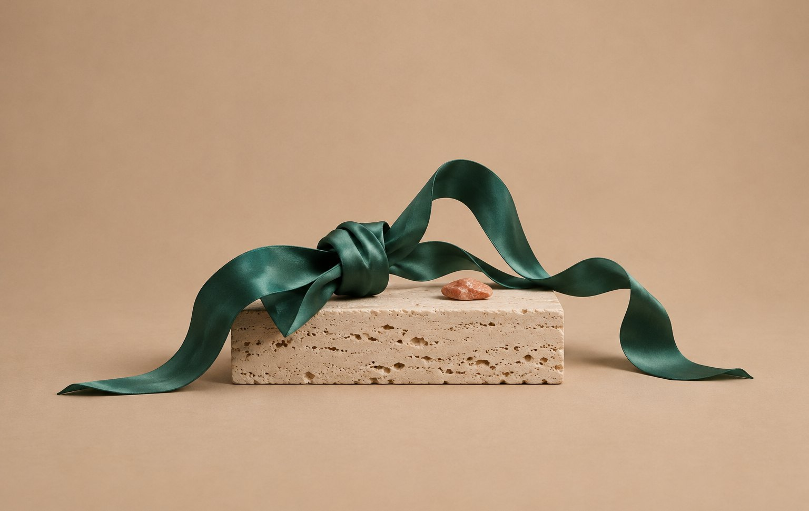
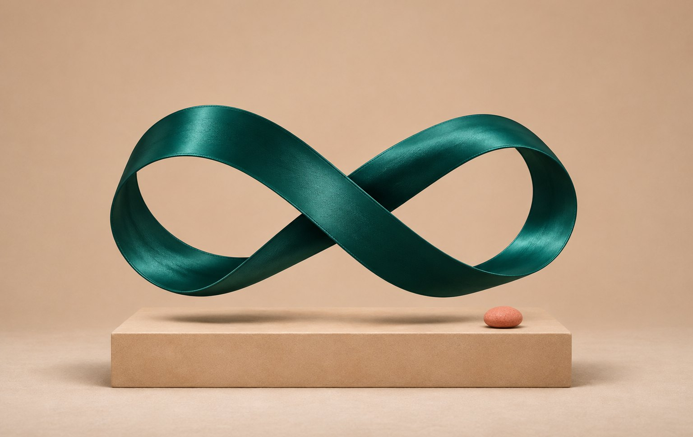

Как за 4 дня выйти из угнетающих чувств на новый уровень дохода, энергии, отношений, реализации
Эфир 1 из 4
«Спусковой крючок» или «Секрет больших денег»: убираем тревогу, страх, обиду, вину и стыд

основатель Института психического здоровья
Когда в жизни что-то идёт не так

01Финансы11 пунктов
- Финансовый потолок
- Доход стоит на месте годами
- Не хватает денег ни на что
- Долги, кредиты
- Деньги утекают сквозь пальцы
- Только заработала – тут же что-то случилось
- Страшно поднять цены и назвать свою стоимость
- Работаю на износ, а больше денег не становится
- Нет накоплений и подушки безопасности
- Неловко просить оплату и говорить о деньгах
- Всё откладываю на потом: покупки, отпуск, мечты
02Отношения11 пунктов
- Сожители с партнёром
- Попадаются козлы
- «Меня не ценят»
- «Хорошая девочка»
- «Я мамка для своего мужа»
- Терплю и молчу, лишь бы не было конфликта
- Отношения есть, а тепла и близости нет
- Боюсь остаться одна – и выбираю недоступных
- Ссоримся по одному и тому же кругу
- Не могу доверять после измены
- Всё держится на мне, он «не включён»
03Здоровье12 пунктов
- Проблемы с ЖКТ
- Аллергии
- Бруксизм
- Болит спина
- Мигрени
- Бессонница, тяжело засыпать
- Панические атаки и тревога в теле
- Ком в горле, зажимы в шее и плечах
- Скачет давление, колотится сердце
- Обследования ничего не находят, а симптомы есть
- Заедаю стресс, срывы в еде
- Кожа реагирует: высыпания, экзема
04Энергия5 пунктов
- Ни на что не хватает сил
- Всем помогла, а про себя забыла
- «Как же меня все достали»
- «Оставьте меня в покое»
- «Я ничего не успеваю»
05Предназначение8 пунктов
- Ощущение, что живёте не свою жизнь
- Время идёт, а жизнь проходит мимо
- Не понимаю, чего хочу на самом деле
- Есть статус и деньги, а внутри пусто
- Начинаю и бросаю: всё время «не моё»
- Завидую тем, кто нашёл своё дело
- «Я способна на большее, но не знаю, на что»
- Страшно, что так и не раскрою свой потенциал
06Реализация3 пункта
- Хотите что-то начать делать, но что-то саботирует
- Страшно, что не получится
- Вроде всё понимаете, но что-то сдерживает

Анна Таскаливна Саба
Врач-психиатр и психотерапевт
Образование:
- Московская медицинская академия им. И.М. Сеченова
- НМИЦ психиатрии и наркологии им. В.П. Сербского
- Факультет непрерывного медицинского образования РУДН
Основатель Института психического здоровья
лет опыта
консультаций
выпускников института
Ваш путь

01- Убираем тревогу, страх, обиду, вину, стыд
- Находим затык, который годами держал на месте
Прошлое больше вас не беспокоит

02- Находим, куда утекали силы, и перекрываем утечки
- Ставим предохранители от откатов
Сил хватает на всё, откатов нет
 03
03- Проверяем цель на истинность
- Убираем сопротивление и саботаж
Пошаговый план: подумали – сделали
 04только для VIP тарифа
04только для VIP тарифа- Переходим в состояние, где всё даётся легко
- Возможности начинают находить вас сами
Вы в состоянии «мне везёт»
За каждый эфир – свой подарок
 1
1«Соединение с деньгами через тень»
«Деньги, предназначение, проявленность, реализация»
 2
2 3
3Практику проведет Михаил Саба
 4
4Совместный эфир Анны и Михаила Саба, совместная практика
Чтобы получить максимальный результат

Так вы получите максимальный эффект и пользу. Помните, что это нужно прежде всего вам, вы делаете это для себя.
Если не получится быть онлайн, запишитесь на тариф VIP, чтобы получить записи.
Я здесь для вас. Ваша обратная связь и вовлечённость – это терапевтический процесс, который быстрее приведёт вас к результатам.
Если вы не готовы даже написать, с чего бы изменениям войти в вашу жизнь? Поставьте цифру 7, кто готов быть активным.

Будьте сегодня до конца – и заберёте записи 2-х терапевтических сессий
проявленность,
реализация»

Закройте глаза и вспомните: о чём вы мечтали в 20 лет?
Какой вы видели свою жизнь, работу, отношения, доход.
А теперь откройте глаза и посмотрите на свою реальность.

Кому знакомо?
Чем больше шевелишься, тем сильнее засасывает, ощущение, что ты погряз в болоте, из которого уже не выбраться
Что бы человек ни делал, ничего особо не улучшается.
Как можно выбраться из болота?
Напишите в чате.

Что вы выбираете?
Жить как сейчас, от зарплаты до зарплаты, с ощущением, что живёте не свою жизнь. Или попробовать?
Дальше расскажу, как повысить вероятность успеха при смене профессии до максимума.

«Я долго не могу пробить финансовый потолок. Много лет хожу словно по кругу, а если деньги приходят, то быстро утекают. Что делать?»

Кора и амигдала
Мышление и понимание
- Здесь живут ваши знания о себе и открытия
Старые реакции
- Часть мозга, которая запускает страх, тревогу и старые сценарии
- Именно с ней мы работаем на практикуме
Подробнее про мозг расскажу на следующем эфире

Удобно всем, кроме клиента
Дёшево и легко научиться
Результат долгий: клиент ходит годами
Человек выговаривается, а домашние задания не делает из-за привычек
Выгоревший психолог на 30 клиентах по 3 000 – 5 000 ₽